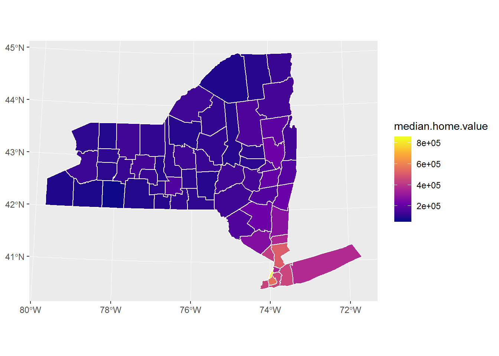
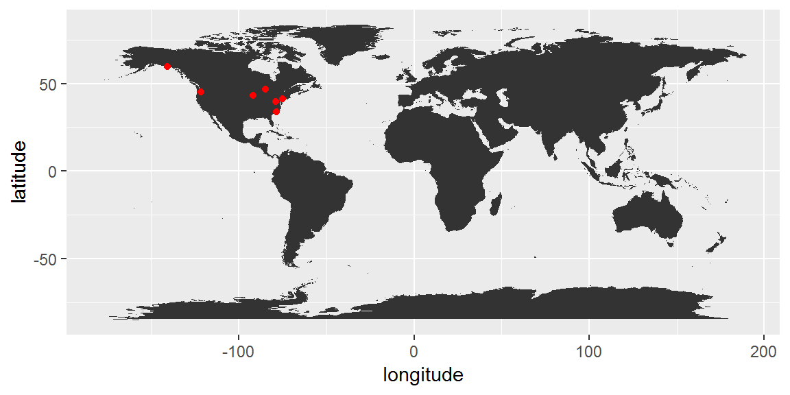

Final Project Version 1.0
R_503_final_project
Jimin Wang
Project Background
The main topics: Using Geographic Weighted Regression to evaluate NYS Home Value
Key words: Home Value; GWR; MGWR; Sustainable Life Index; OLS
Materials and methods
To be Continue …
Project Composition :
- The first most important thing
- The second most important thing
- The third most important thing
Load any required packages in a code chunk (you may need to install some packages):
library(spgwr)
library(ggplot2)
library(tidyverse)
library(sp)
library(sf)
knitr::opts_chunk$set(cache=TRUE) # cache the results for quick compilingRead NY state .shp basemap from file

Read csv data from file
Read median house price value data
## Warning: Column `NAME` joining character vector and factor, coercing into
## character vectorvisualization: Median Home Value

Read unemployment rate data
## Warning: Column `NAME` joining character vector and factor, coercing into
## character vectorvisualization: Unemployment Rate

Read higher education rate data
## Warning: Column `NAME` joining character vector and factor, coercing into
## character vectorvisualization: Percent of residents with bachelor or above degree

Read average vehicle data
## Warning: Column `NAME` joining character vector and factor, coercing into
## character vectorvisualization: vehicle ownership per 1000 people

Read senior population rate data
senior_pop_rate<- read.csv("data/census_statistics/senior_population_2014.csv")
NYS_shp_senior = left_join(NYS_shp,senior_pop_rate, by="NAME" )## Warning: Column `NAME` joining character vector and factor, coercing into
## character vectorsenior_pop_c <- senior_pop_rate$Senior.Popvisualization: population over 65 percent

Read tax rate data
tax_rate<- read.csv("data/census_statistics/property_tax_rate_2014.csv")
NYS_shp_tax = left_join(NYS_shp,tax_rate, by="NAME" )## Warning: Column `NAME` joining character vector and factor, coercing into
## character vectortax_rate_c <- tax_rate$Taxvisualization: property tax rate

First Model: OLS – Multivariat Linear Regression
##
## Call:
## lm(formula = median_home_value_c ~ unemployment_rate_c + senior_pop_c +
## vehicle_ave_c + higherEdu_rate_c + tax_rate_c)
##
## Residuals:
## Min 1Q Median 3Q Max
## -277.245 -31.519 0.534 33.410 151.434
##
## Coefficients:
## Estimate Std. Error t value Pr(>|t|)
## (Intercept) 330.963 159.165 2.079 0.0422 *
## unemployment_rate_c 5.521 6.415 0.861 0.3931
## senior_pop_c -2.059 4.269 -0.482 0.6314
## vehicle_ave_c -1018.227 150.689 -6.757 8.71e-09 ***
## higherEdu_rate_c 9.028 1.362 6.630 1.41e-08 ***
## tax_rate_c -5.105 3.533 -1.445 0.1540
## ---
## Signif. codes: 0 '***' 0.001 '**' 0.01 '*' 0.05 '.' 0.1 ' ' 1
##
## Residual standard error: 66.32 on 56 degrees of freedom
## Multiple R-squared: 0.8078, Adjusted R-squared: 0.7907
## F-statistic: 47.08 on 5 and 56 DF, p-value: < 2.2e-16Conclusions
What have you learned? Are there any broader implications?